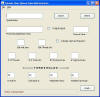

Tymeac User Queues
The purpose of this Class is a replacement for the Queue Table in a data base management system and the maintenance of that table by the frame Class TyQueMaint.
Since this is a user maintained Class, we provide a simple source code Class (QueueChecker), with which you may check the validity of this Class before starting the TymeacServer.

Since maintaining this class by hand can result in errors, we provide a GUI with which you may maintain this class. This is a binary "use the GUI or do it by hand". If you use the GUI, then you should not try to edit the resulting java file. The GUI is very simple -- it reads a java file without comments or formatting.
Release 6.0 changes:
The easiest way to change this structure when installing release 6.0 is to manually alter the java file created by the GUI in releases prior to 6.0.
Simply add the logical number of Wait List entries after the physical number of Wait List entries, such as
FROM:// [QUEUE]
temp.addElement( new TymeacIndividualQueue(
"AAAA",
"com.tymeac.serveruser.Demo1",
"no",
"no",
0,
3,
10,
50,
10,
20,
0.00F,
0.60F,
0.05F,
0.00F));TO:
// [QUEUE]
temp.addElement( new TymeacIndividualQueue(
"AAAA",
"com.tymeac.serveruser.Demo1",
"no",
"no",
0,
3,
10,
50,
30, <=== added here
10,
20,
0.00F,
0.60F,
0.05F,
0.00F));In either case, once you create the TymeacUserQueues.java file, you must compile it into the com/tymeac/serveruser directory.
The GUI class is com.tymeac.jframe.TyUserQueues.

(Click for full image)
{kind=link}
It require access to the java file, TymeacUserQueues.java. You may not substitute another file name in the dialog box.
The editing for the fields is the same as the DBMS Functions GUI, TyQueMaint.
The rest of this document explains the java file format.
Instance Fields
Int total_queues - The total number of Tymeac Queues in the system.
com.tymeac.base.TymeacIndividualQueue[] tic - This array contains each Queue.
Constructor
This is where you set the values for the above instance variables.
You may either use the no-argument constructor for the TymeacIndividualQueue Class and set all the fields with mutators, or use the argument constructor to set the field values. The source code we supply with the product demonstates both methods.
Instance Methods
These are accessors for all the above instance fields.